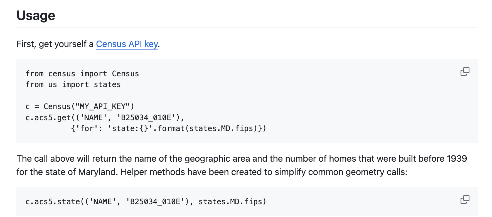
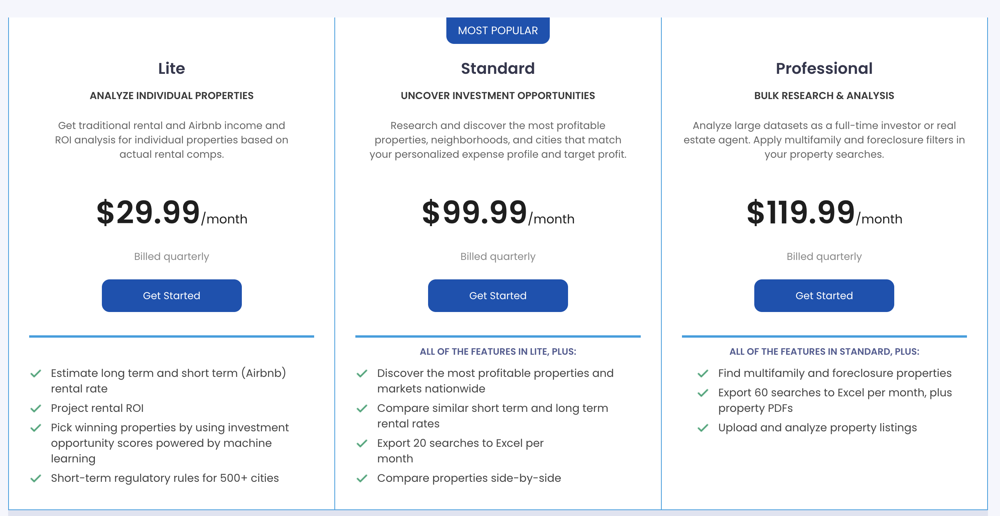
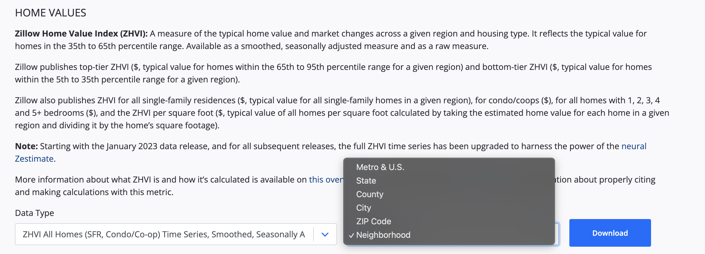
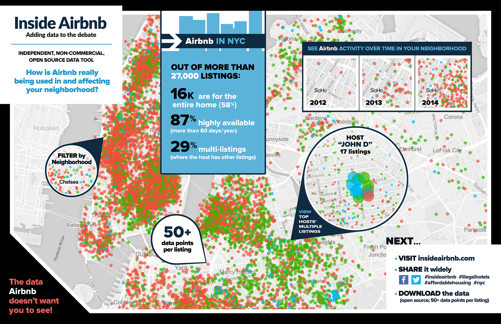
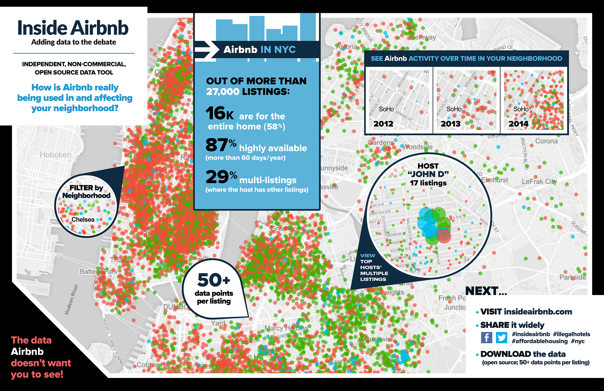

Data access
Contents
Data access¶
Finding, downloading, and cleaning data is an important, but laborious, part of geospatial data science. In this demo, we will download data programmatically using Application Programming Interfaces (APIs). We will also talk about strategies for downloading data when an API is unavailable or insufficient.
APIs¶
So far in this course we have mainly been using data that has been downloaded locally from point-and-click GUIs. But it is becoming more and more common to access data programmatically from an online server. These platforms often have a public API that we can use to pull data inside our Python environment.
An API is a type of software that provides a standard set of protocols/functions so that our computer can communicate with other computers (in contrast, a user interface is a type of software that connects a computer to a person)
The basic idea is we send a request (which may include query parameters and access credentials) to an endpoint. That endpoint will return a response code plus the data we asked for. For these kind of tasks, we have to carefully inspect the API documentation to understand what functions are available and what keyword arguments they require.
Many organizations have great APIs because they want people to use their data.
Census Bureau¶
The US Census Bureau has a great API that makes demographic, socio-economic and housing statistics more accessible than ever before.
Developers use customize these statistics to create apps that:
Provide a local government a range of socioeconomic statistics on its population.
Show commuting patterns for every city in America.
Display the latest numbers on owners and renters in a neighborhood someone may want to live in.
Many students will use Census Bureau data in their final projects.
census¶
census is an interface to explore and query the US Census API in Python. It conveniently returns the data in Pandas Dataframes for further analysis.
We know census is legitimate because it has an active GitHub repository.

More information about this package can be found here.
First we should find how to install it, usually either through conda or pip.
{kind=link}
# Import package
from census import Census
Then search the documentation for examples…
{kind=link}
c = Census("5f7e25f1ce5f52828e64cc4e5ff5f470759b4e03")
c.acs5.state(('NAME', 'B25034_010E'), '41')
[{'NAME': 'Oregon', 'B25034_010E': 92807.0, 'state': '41'}]
{kind=link}
USGS hydrologic data¶
Let’s have a look at another API called dataretrieval which was developed by USGS to retrieve hydrologic data.
{kind=link}
Again, the documentation makes it clear that we should install it using either conda or pip.
{kind=link}
%%capture
# Install package
!pip install -U dataretrieval
Now we can look through the documentation to see if the examples function as expected.

# Import the functions for downloading data from NWIS
import dataretrieval.nwis as nwis
# Specify the USGS site code
site = '03339000'
# Get instantaneous values (iv)
df = nwis.get_record(sites=site, service='dv', start='2020-10-01', end='2021-09-30')
df.head()
| site_no | 00010_ysi_Mean | 00010_ysi_Mean_cd | 00060_Mean | 00060_Mean_cd | 00065_Mean | 00065_Mean_cd | 00095_Mean | 00095_Mean_cd | 00300_Minimum | ... | 63680_ysi_Mean | 63680_ysi_Mean_cd | 91049_Mean | 91049_Mean_cd | 99133_Maximum | 99133_Maximum_cd | 99133_Minimum | 99133_Minimum_cd | 99133_Mean | 99133_Mean_cd | |
|---|---|---|---|---|---|---|---|---|---|---|---|---|---|---|---|---|---|---|---|---|---|
| datetime | |||||||||||||||||||||
| 2020-10-01 00:00:00+00:00 | 03339000 | 14.9 | A | 75.7 | A | 2.04 | A | 672.0 | A | 8.9 | ... | 3.7 | A | NaN | NaN | 4.1 | A | 3.3 | A | 3.7 | A |
| 2020-10-02 00:00:00+00:00 | 03339000 | 14.5 | A | 66.0 | A | 1.99 | A | 678.0 | A | 9.2 | ... | 3.6 | A | NaN | NaN | 4.2 | A | 3.8 | A | 4.1 | A |
| 2020-10-03 00:00:00+00:00 | 03339000 | 14.2 | A | 60.2 | A | 1.96 | A | 678.0 | A | 9.4 | ... | 3.2 | A | NaN | NaN | 3.8 | A | 3.0 | A | 3.4 | A |
| 2020-10-04 00:00:00+00:00 | 03339000 | 14.4 | A | 68.8 | A | 2.01 | A | 705.0 | A | 9.1 | ... | 3.3 | A | NaN | NaN | 3.0 | A | 2.6 | A | 2.8 | A |
| 2020-10-05 00:00:00+00:00 | 03339000 | 13.4 | A | 66.8 | A | 1.99 | A | 718.0 | A | 9.6 | ... | 3.1 | A | NaN | NaN | 3.4 | A | 2.7 | A | 3.0 | A |
5 rows × 59 columns
# Plot
f, ax = plt.subplots(1, 1, figsize=(10,4))
ax.plot(df['00060_Mean'])
[<matplotlib.lines.Line2D at 0x7fd769e592b0>]

Tips for APIs¶
Take a minute to make sure that package is used (e.g. lots of forks, stars) and up-to-date (e.g. last commit)
Read the
docs,demos,examplesand hope we find what we’re looking for (sometimes they are not that comprehensive)If you can’t find what you’re looking for, inspect the source code (
.pyfiles)
API limits¶
Often APIs are sometimes not available or have limitations. Technology companies are known for hoarding data to secure market dominance. But this is a problem because, by guarding data, they are also preventing it being used for good causes. Without access to their data it is difficult to tell whether they are in compliance.
Either presented with subscription-based API
{kind=link}
Or an API with limited functionality
{kind=link}
Web scraping¶
Since web pages are usually organized in a specfic way, we can still download data from them.
Web scraping (also known as crawling or harvesting) is the practice of automatically gathering data from the internet without the use of an API
Most commonly accomplished by writing a program that queries a web server, requests data (usually in the form of HTML), and parses that data to extract information
 

{kind=link}
Suppose a friend wanted to do this?¶
requests: standard Python library for requesting data from the webBeautifulSoup: a library for pulling data out of HTML and XML filesselenium: is a library for performing web browser automation
requests¶
A lot of data on Wikipedia is contained in HTML tables which have the following syntax.
The table itself starts with the
<table>tag and finishes with</table>Table rows start with the
<tr>tag and finish with</tr>Table headers start with the
<th>tag and finish with</th>Table data start with the
<td>tag and finish with</td>
The table below, showing some of the biggest soccer clubs in the world, is an example of a simple HTML table.
| Team | Manager | Country |
|---|---|---|
| Real Madrid | Carlo Ancelotti | Spain |
| Bayern Munich | Julian Nagelsmann | Germany |
| Hull City | Liam Rosenior | England |
| Paris Saint-Germain | Christophe Galtier | France |

# Import packages
import requests
# Open a webpage
html = requests.get('https://en.wikipedia.org/wiki/Climate_of_Oregon')
# HTML
html
<Response [200]>


BeautifulSoup4¶
Now we could write a program to parse this HTML code (i.e. split into useful blocks)…
…or we could use another package called
BeautifulSoup(also known asbs4) a Python library for parsing data out of HTML and XML files

# Import package
from bs4 import BeautifulSoup, SoupStrainer
# Read HTML content as "soup object" and define default parser
soup = BeautifulSoup(html.text, 'html.parser')
Parse HTML¶
The .find and .find_all are the most common methods we will use. They can be used to filter HTML code to find a list of tags or tags with specific attributes.
# Define heading tags
heading_tags = ["h1", "h2"]
# Find heading tags in HTML code
headings = soup.find_all(heading_tags)
# Loop over every heading and print text
for tags in headings:
print(tags.name + ' -> ' + tags.text.strip())
h2 -> Contents
h1 -> Climate of Oregon
h2 -> Precipitation[edit]
h2 -> Temperature[edit]
h2 -> Selected climate charts[edit]
h2 -> See also[edit]
h2 -> References[edit]
# Find every hyperlink
links = soup.find_all('a')
# Loop over every link and print hyperlink
for link in links[0:10]:
print(link.get('href'))
#bodyContent
/wiki/Main_Page
/wiki/Special:Search
/w/index.php?title=Special:CreateAccount&returnto=Climate+of+Oregon
/w/index.php?title=Special:UserLogin&returnto=Climate+of+Oregon
/w/index.php?title=Special:CreateAccount&returnto=Climate+of+Oregon
/w/index.php?title=Special:UserLogin&returnto=Climate+of+Oregon
/wiki/Help:Introduction
/wiki/Special:MyContributions
/wiki/Special:MyTalk
# Find number of images on page
len(soup.find_all('img'))
24
# Print details of first image
print(soup.find_all('img')[5])
<img class="thumbimage" data-file-height="1206" data-file-width="776" decoding="async" height="342" src="//upload.wikimedia.org/wikipedia/commons/thumb/8/80/Oregon_Average_Annual_Precipitation_%281961-1990%29_Map.png/220px-Oregon_Average_Annual_Precipitation_%281961-1990%29_Map.png" srcset="//upload.wikimedia.org/wikipedia/commons/thumb/8/80/Oregon_Average_Annual_Precipitation_%281961-1990%29_Map.png/330px-Oregon_Average_Annual_Precipitation_%281961-1990%29_Map.png 1.5x, //upload.wikimedia.org/wikipedia/commons/thumb/8/80/Oregon_Average_Annual_Precipitation_%281961-1990%29_Map.png/440px-Oregon_Average_Annual_Precipitation_%281961-1990%29_Map.png 2x" width="220"/>
# Find attributes of first image
print(soup.find_all('img')[5].attrs['src'])
//upload.wikimedia.org/wikipedia/commons/thumb/8/80/Oregon_Average_Annual_Precipitation_%281961-1990%29_Map.png/220px-Oregon_Average_Annual_Precipitation_%281961-1990%29_Map.png
# Download image
url = 'https://' + soup.find_all('img')[5].attrs['src'][2:]
response = requests.get(url)
if response.status_code == 200:
with open("images/test_image.jpg", 'wb') as f:
f.write(response.content)
# Import packages
import matplotlib.pyplot as plt
import matplotlib.image as mpimg
# Read image
img = mpimg.imread('images/test_image.jpg')
# Plot image
plt.imshow(img)
<matplotlib.image.AxesImage at 0x7fc6e846cd30>

Selenium¶
Sometimes we want even more control…
Selenium is a package for performing web browser automation
We can use Selenium to enter text in search boxes, click buttons etc.

%%capture
# Install webdriver_manager: https://github.com/SergeyPirogov/webdriver_manager
!pip3 install webdriver_manager
# Import packages
from selenium import webdriver
from selenium.webdriver.chrome.service import Service
from selenium.webdriver.common.by import By
from webdriver_manager.chrome import ChromeDriverManager
# Install Chrome webdriver
driver = webdriver.Chrome(service=Service(ChromeDriverManager().install()))
# Open a web browser at the following page
driver.get("https://www.google.com/maps")
[WDM] - Downloading: 100%|███████████████████████████████████████████████████████████████████████████████████████████████████████████████████████████████████████████████████████████████████| 8.82M/8.82M [00:00<00:00, 32.3MB/s]
{kind=link}

# Enter some text in the search box
inputElement = driver.find_element(By.ID, "searchboxinput")
inputElement.send_keys('South Sister Oregon')
{kind=link}
# Click search button
element = driver.find_element(By.ID, "searchbox-searchbutton")
element.click()